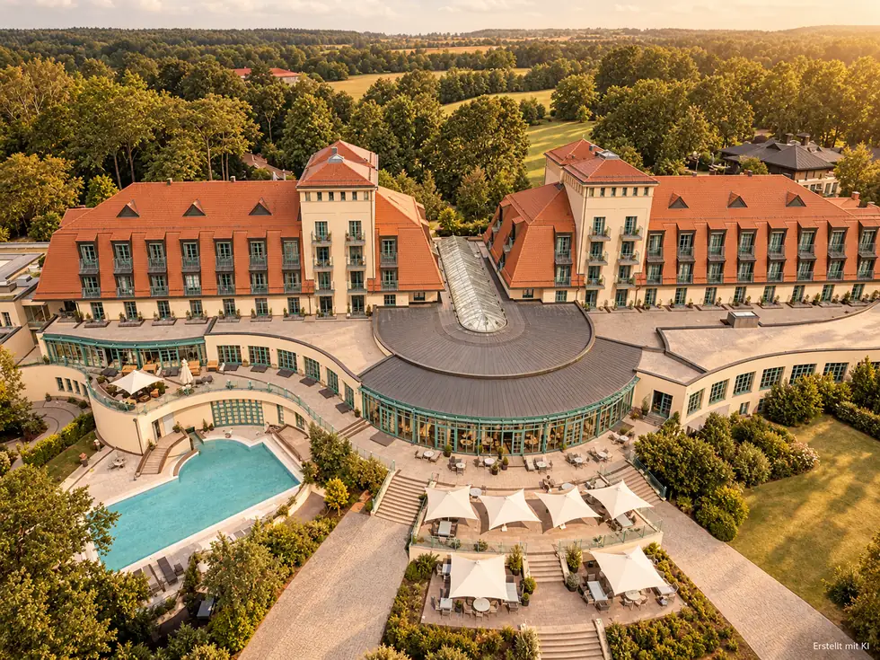
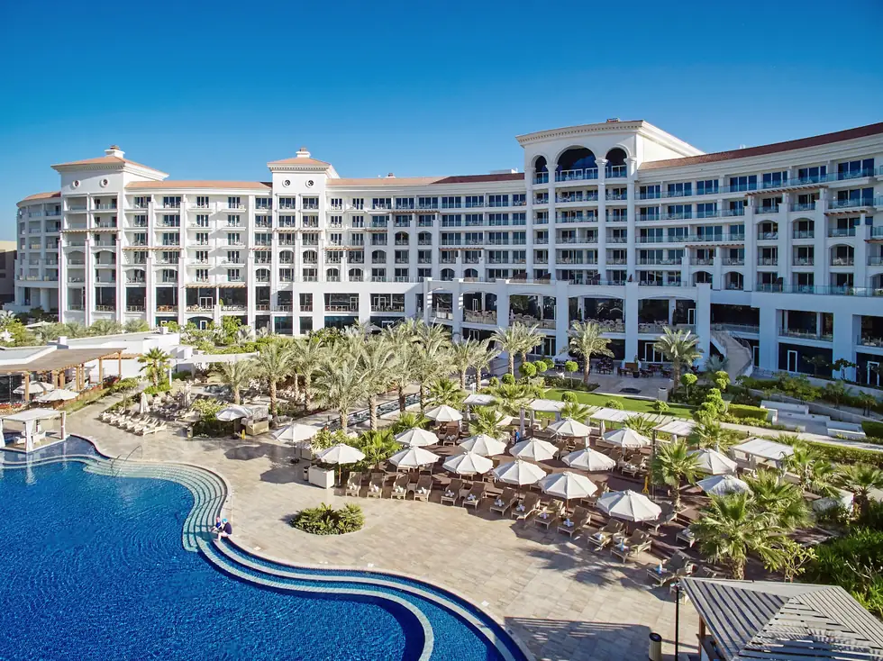
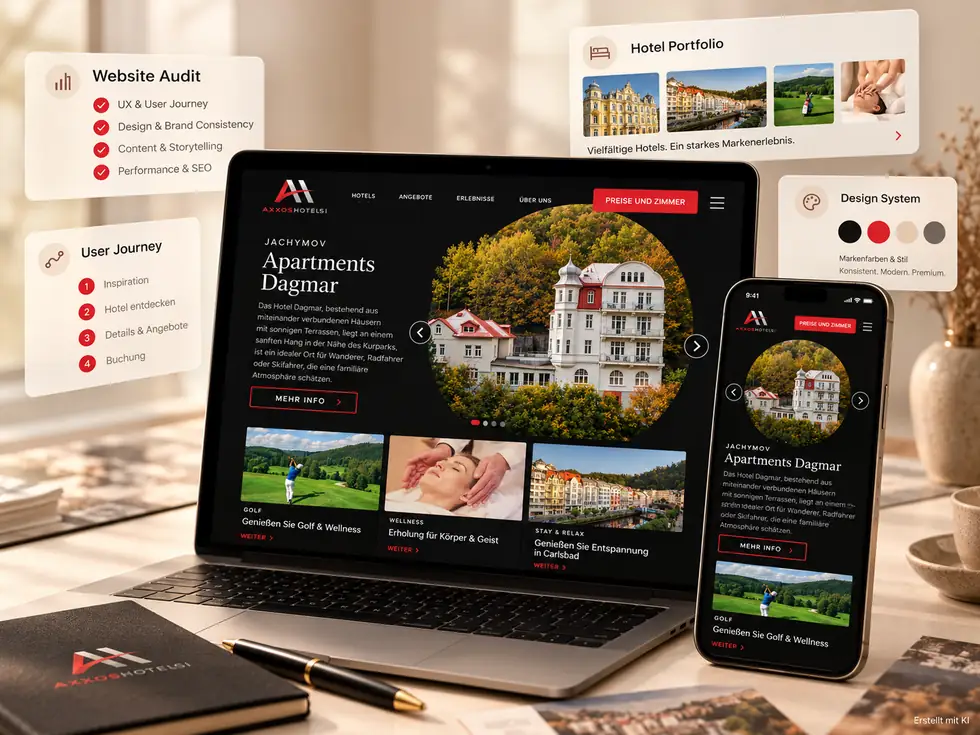

Beobachtungen, Grenzen und konkrete Erkenntnisse.
Hier finden Sie ausgewählte dokumentierte Arbeiten. Wir unterscheiden beobachtete Veränderungen, methodische Interpretationen und noch offene Fragen.

Precise Resort Bad Saarow
Ein konkreter Untersuchungsgegenstand: die Informationsbeziehung zwischen dem Resort, einem 16+-Pool und Wassermassage. Dokumentiert wird, ob gezielte Auffindbarkeit und spontane Auswahl in offenen KI-Antworten auseinanderfallen.
Grenze: Ein beobachteter Antwortverlauf beweist keine dauerhafte Änderung der Modellsysteme oder zusätzliche Direktbuchungen.
Precise Resort Bad Saarow – Original-Feldversuch lesen ↗
Waldorf Astoria Dubai Palm Jumeirah
Ein unabhängiger Abgleich zwischen digitalem Hotelbild, denkbaren Empfehlungssituationen und dokumentierten eigenen Beobachtungen vor Ort. Die Untersuchung trennt beobachtete Serviceaspekte von allgemeinen Markenversprechen.
Status: Der verlinkte Bericht ist ausdrücklich als in Bearbeitung markiert. Er ist kein abgeschlossener Erfolgsnachweis.
Waldorf Astoria Dubai – GEO-Audit lesen ↗
AXXOS Hotels & Resorts
Analyse der deutschsprachigen Startseite zu Nutzerführung, Positionierung, technischem SEO und semantischer Verständlichkeit. Der ursprüngliche Bericht liegt als Entwurf auf Russisch und Spanisch vor; die weiteren Sprachversionen wurden nicht vollständig auditiert.
Grenze: Bewertet wurden technische und semantische Voraussetzungen, keine tatsächlichen KI-Empfehlungsquoten.
Alle veröffentlichten Fallstudien im Repository ↗